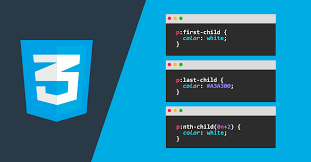

Estructura Web
Http
Creacion de formularios, manejo de metadatos como titulo, descripcion, y palabras claves, publicación de textos, imagenes, videos, mapas y frames, y menejo de textos con tildes
Hojas de estilo
Css
Manejo de grid y flex layout, diseño de cajas, textos, e imagenes. Utilizo arquitecturas de diseño como BEM, atomic design, oocss y orden de estilos. Menejo de pseucdoclases y pseudoelementos
Control de versiones
Git y GitHub
Creación de repositorios locales y remotos, control del estado y modificación de los archivos, manejo de las ramas, control de errores,y manejo de conexiones ssh,
Aplicaciones Web
 React.JS
React.JS
Manejo de estado de las aplicaciones, interacción con apis, renderización de contenido, manejo de componentes, uso de redux.
Lenguaje de programación

JavaScript
Menejo del DOM, estructura de datos, y creación de funcionalidades que mejoran la experiencia de usuario utilizando node y react.js
Backend con Node.js
Express.jsCreación de Api rest, creación del servidor, conexión a bases de datos, control de errores, creación de JWT para la autenticación de usuario, encriptación de contraseñas